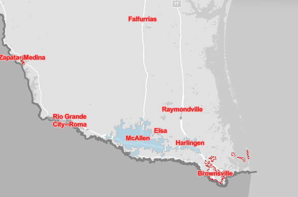

Inspection Services
Occupancy Verification
Confirming occupancy status for lenders and insurers with standardized reporting.
Property Condition Documentation
Detailed interior and exterior photos to support underwriting and asset review.
Drive‑By Reports
Quick exterior assessments for collateral verification and occupancy checks.
Collateral Verification
Accurate documentation ensuring property condition aligns with loan requirements.
Insurance Loss Draft Inspections
Verification of repairs and damage for insurance carriers and mortgage servicers.
Disaster & Hazard Inspections
Rapid response documentation following storms, fires, or other hazardous events.
Service Area
CV Field Services proudly serves the Rio Grande Valley region.
- McAllen
- Edinburg
- Pharr
- Mission
- San Juan
- Alamo
- Donna
- Weslaco
- Mercedes
- Harlingen
- Brownsville
